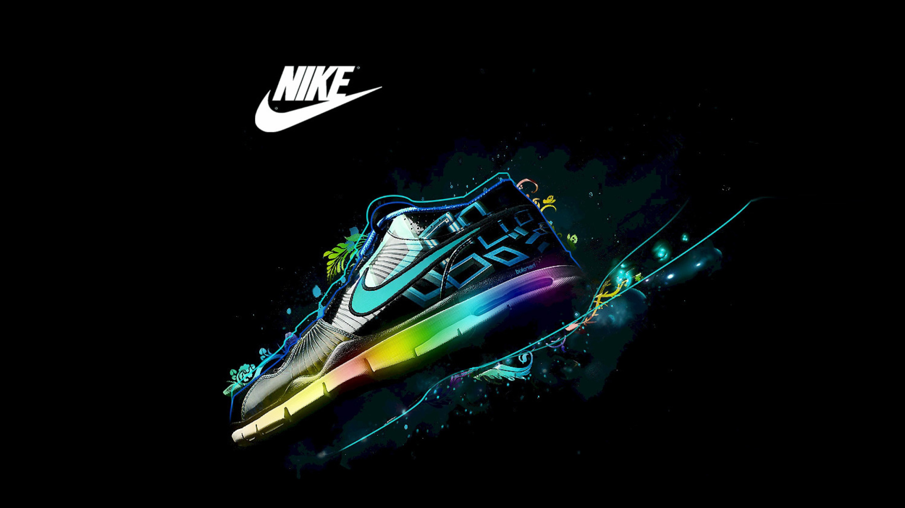
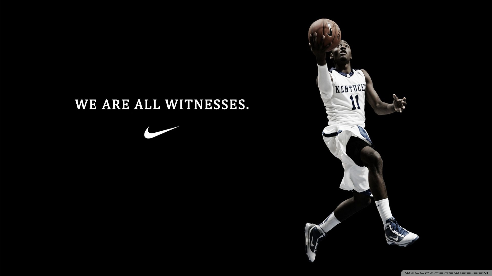
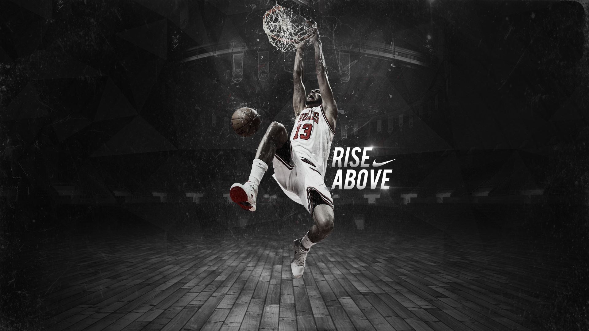

Kyrie Irving is a creative force on and off the court. He needs his shoes to keep up with his playmaking, but also sync with his boundary-pushing style and ethos. Tuned for the next generation of energy return, control and speed, the Kyrie 7 helps players at all levels take advantage of their quick first step by optimizing the shoe's fit, court feel and banking ability.

The history of this iconic colorway traces back to a LeBron 2 PE that became one of LeBron’s most all-time coveted releases. Over the years, LeBron’s signature models have occasionally dropped with the characteristic black and lime green color combo. This LeBron 18 continues the tradition with a black-dominant upper speckled electric green to match the pop-color Max Air cushioning and outsole rubber. LeBron’s iconic logo shows upon the heel—the high-flying symbol of his unstoppable power and speed.

To pay homage to our basketball roots, we're transporting the legendary Pro Leather back in time to an alternate reality. The year is 1975, and fictional ABA team, the Roswell Rayguns, have come to play. With nods to their team colors and alien mascot, these sneakers bring a whole new meaning to home and away.

A legend prepares for the Chinese New Year in the Nike Court Borough Low. This low-top style has a structured, supportive fit with a retro basketball design so you can look like an all star off the court.